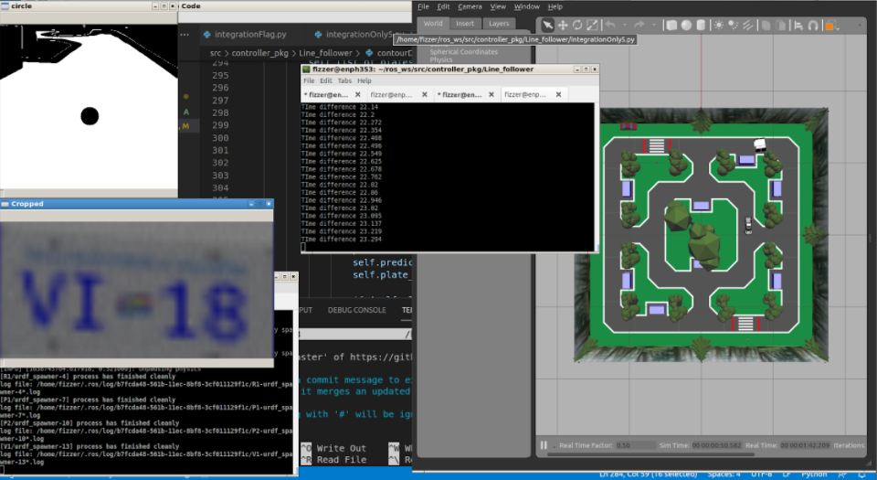

ENPH 353 Final Project
For the final project for our class ENPH 353, we had to work in groups of two and program an autonomous car in python and simulated in ROS. The objective of this project was to have a car that could navigate it's way around a parking lot and collect parking IDs of the parked vehicles.
My partner and I decided with the strategy of using a PID algorithm for navigation and a convolutional neural-network to detect the parking IDs. I remember being completely lost and intimidated when the project was first assigned to us. But I am happy to say that after learning more about CNNs, lots of network training errors, debugging, and a lot of reading related stackoverflow posts, we finally had a working model that drove around the outer parking loop and reported back parking IDs of 3 parked vehicles. I have included a very brief overview of our main strategy below and you are more than welcome to read more about our project by clicking on the final report link below.
Above is a screenshot of a few of the debugging windows that we had open while figuring out the issues with our network and it's predictions. The windows captured in the screenshot above are:
- Circle: This window shows the thresholded camera feed from the car's front camera. In order for the car to line follow, we had to find the centroid of the road and this was accomplished using an OpenCV function. To ensure that the centroid was indeed in the center of the road, we drew a circle at the centroid coordinates and had this window to confirm the same.
- Code: This is the Visual Studio Code window as this was the IDE that we primarily used for this project.
- GymGazebo Simulated world: This is a ROS simulated world where the competition took place.
- Cropped: This window was crucial in our debugging process and very rewarding when we finally got the desired output. In order to extract the parking IDs from the vehicles from the parked cars, we had to threshold the image feed to extract just the license plate area and ignore all the surrounding noise. This cropped image was what we fed into our CNN which resulted in the actual parking ID as the output.
A detailed description of our competition strategy and the role of the above described windows is included in our final report, a link to which is included below. A link to our github repo for the competition is also included below.
GitHub